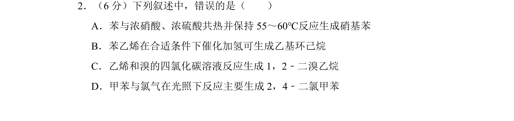
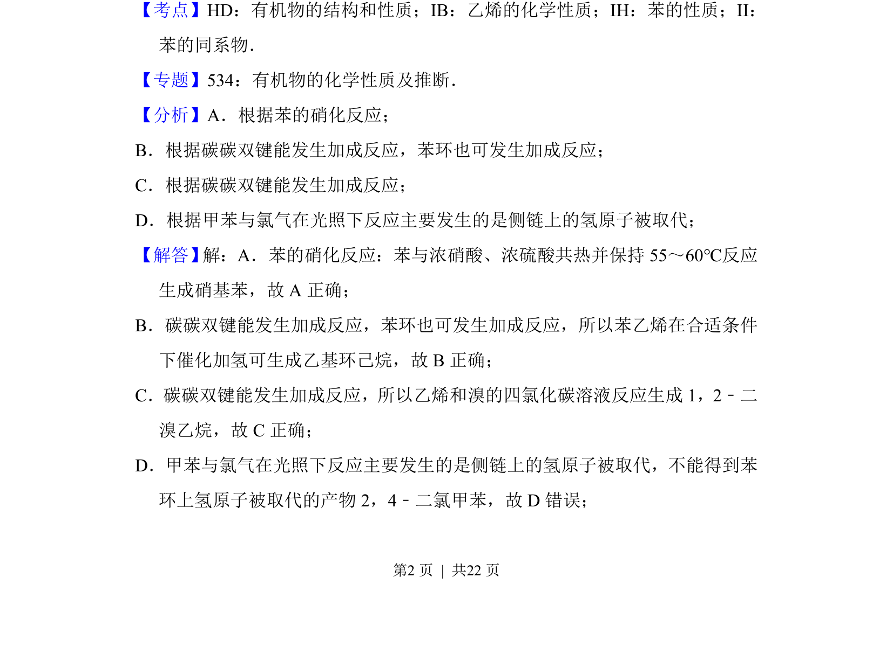
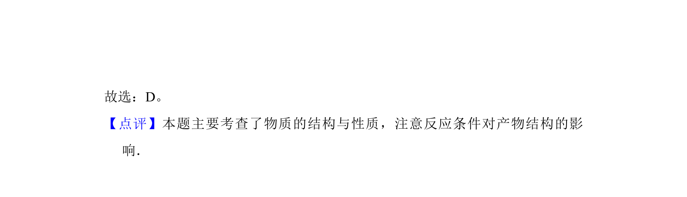

考点：苯的硝化 碳碳双键加成 苯环催化加氢 甲苯光照侧链取代

考查苯、乙烯、甲苯和苯乙烯等有机物的典型反应与结构性质


📄 原 PDF 第 2 页：
素材/真题/吉林/2008-2024·（吉林）化学高考真题/2013年高考化学试卷（新课标Ⅱ）（解析卷）.pdf
2．（6分）下列叙述中，错误的是（ ） A．苯与浓硝酸、浓硫酸共热并保持55～60℃反应生成硝基苯 B．苯乙烯在合适条件下催化加氢可生成乙基环己烷 C．乙烯和溴的四氯化碳溶液反应生成1，2﹣二溴乙烷 D．甲苯与氯气在光照下反应主要生成2，4﹣二氯甲苯
【考点】HD：有机物的结构和性质；IB：乙烯的化学性质；IH：苯的性质；II： 苯的同系物．菁优网版权所有 【专题】534：有机物的化学性质及推断． 【分析】A．根据苯的硝化反应； B．根据碳碳双键能发生加成反应，苯环也可发生加成反应； C．根据碳碳双键能发生加成反应； D．根据甲苯与氯气在光照下反应主要发生的是侧链上的氢原子被取代； 【解答】 解：A．苯的硝化反应：苯与浓硝酸、浓硫酸共热并保持55～60℃反应 生成硝基苯，故A正确； B．碳碳双键能发生加成反应，苯环也可发生加成反应，所以苯乙烯在合适条件 下催化加氢可生成乙基环己烷，故B正确； C．碳碳双键能发生加成反应，所以乙烯和溴的四氯化碳溶液反应生成1，2﹣二 溴乙烷，故C正确； D．甲苯与氯气在光照下反应主要发生的是侧链上的氢原子被取代，不能得到苯 环上氢原子被取代的产物2，4﹣二氯甲苯，故D错误；